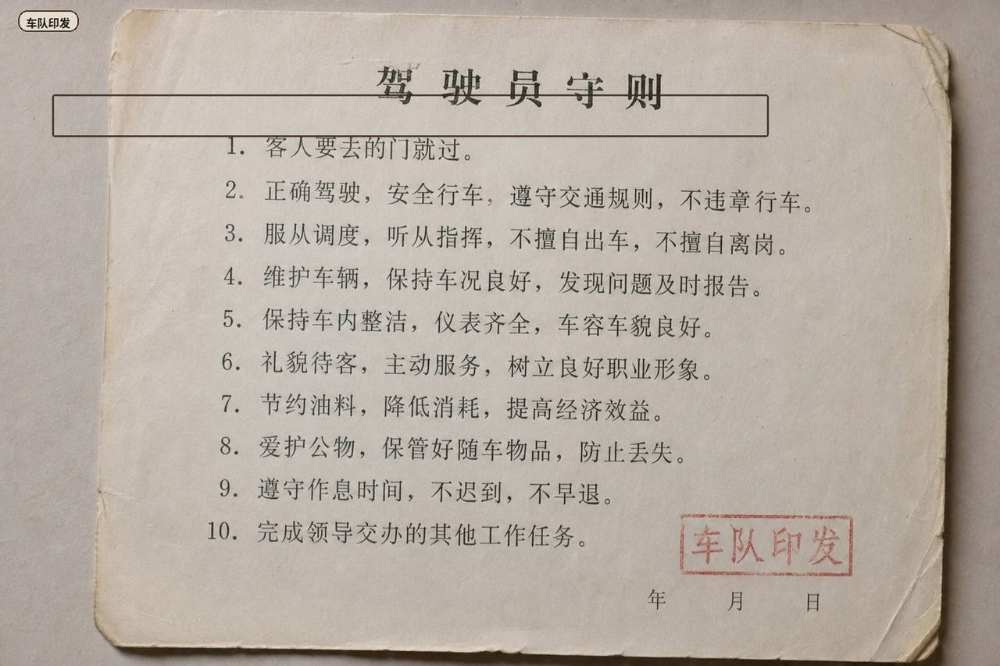
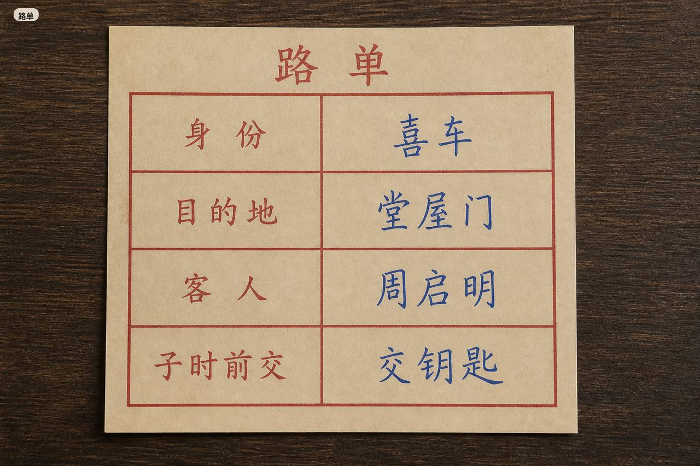
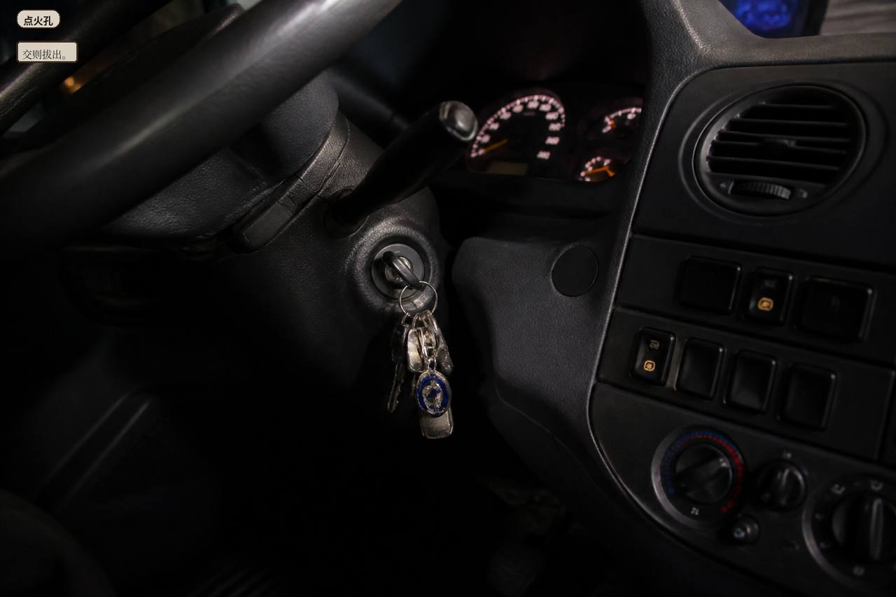

Cab seat. Clipboard on the dash. Hand in before zishi.
No paper is wholly true. Waybill identity decides which paper you hear.
Passenger seat

Fleet print, typed copy. Title: driver rules. Line 1: guest names a door, go through it. Stamp: fleet print. Date blank.
Shuanghekou night fleet print. Door the guest names, point the nose there. Do not ask joy or funeral. Relief pay is by valid bill.
This slot has no paper yet. Process slips light later. Don’t press yet.


Mark two that fight. Ink stays.
Waybill

Printed waybill: identity / destination / guest / hand in before zishi. Default fill: joy car, hall door, Zhou Qiming.
Destination Hall door
Guest Zhou Qiming
Identity Joy car
Bag empty
Which paper to press

Ignition hole. Hand over, then pull the key.
Du Heng is on the radio. Pay is by valid bill. Mark a pair, then press. Hand the keys before the next night.
Du Heng: mark tonight, then press. Hand the keys. Pay is by valid bill.